遊び方
ゲーム概要
|
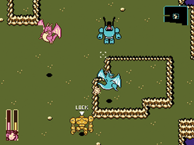
|
GGGG2 はアクション・シューティングゲームです。
主人公エレナが搭乗するロボット「ガンライド」を操作し、
弾丸で敵を倒しながら、ランダムに生成されるダンジョンを攻略します。
攻略にはアイテムの使用が欠かせません。
敵を倒すとキャッシュが増えるので、ショップでアイテムを購入し、
アイテム画面で使用してください。
|
クリア条件
|
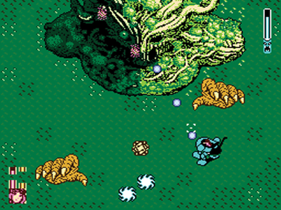
|
ゲームは町から始まります。
町の北・東・西にある３つのダンジョンでボスを倒し、
町に戻って最後のボスを倒すとエンディングになります。
|
ゲームオーバー条件
|
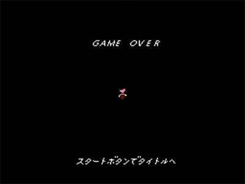
|
HP が 0 になるとゲームオーバーになります。
ゲームオーバー後、スタートボタンを押してタイトルへ戻り、
コンティニューを選択すると、町から再開することができます。
再開時はキャッシュが半分になりますが、その他のステータスや
所持アイテムは維持されています。
|
操作方法
基本操作
|
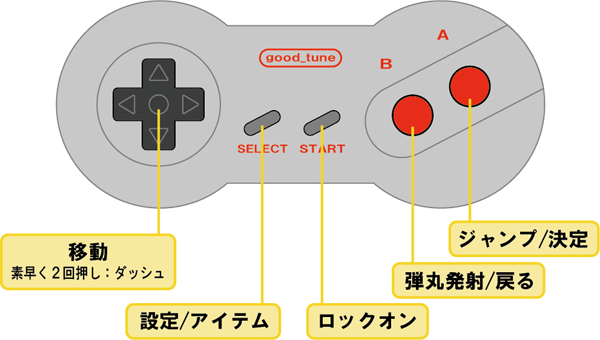
|
方向キー：移動
Ａボタン：ジャンプ／決定
Ｂボタン：弾丸発射／戻る
スタートボタン：ロックオン
セレクトボタン：設定／アイテム
|
ダッシュ
方向キーの同じ方向を素早く２回押すとダッシュします。
空中でもダッシュできます。
コントロール設定
|
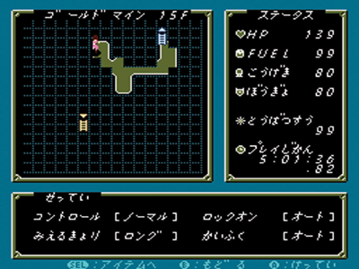
|
設定画面（セレクトボタン）でコントロール設定を
［ノーマル］／［テクニカル］から選ぶことができます。
［ノーマル］
方向キー上下左右で、画面に対して上下左右に移動します。
［テクニカル］
方向キー左右で旋回、方向キー上下で照準方向に前進後退します。
ロックオン時は方向キー左右で、照準方向に対して左右平行移動します。
|
各画面の説明
タイトル
|
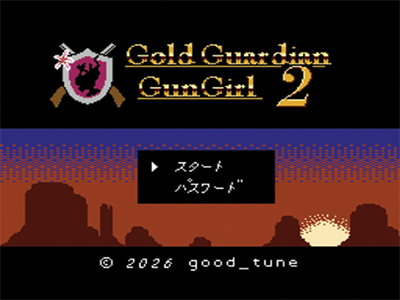
|
方向キー、または、セレクトボタンでカーソル移動、
スタートボタン、または、Ａボタンで決定します。
［スタート］
ゲームを初めから開始します。
ゲームオーバー後は［コンティニュー］に変わります。
［パスワード］
パスワード画面へ移動します。
|
会話
|
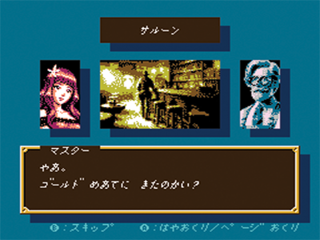
|
Ａボタンで文字の早送り／ページ送りをします。
Ｂボタンで会話内容をスキップして会話画面を終了します。
|
町
|
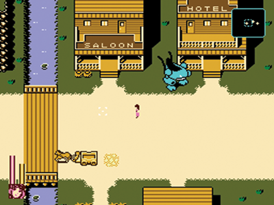
|
方向キーで移動し、建物やダンジョンに入ります。
Ｂボタンでガンライドから降ります。
ガンライドから降りた状態で、Ｂボタン押しながら
方向キーを押すとダッシュになります。
|
ショップ
|
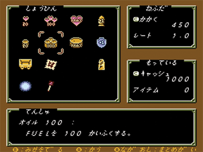
|
方向キーで商品を選択し、Ａボタンで購入します。
Ａボタン押しっぱなしで連続購入できます。
Ｂボタンでショップ画面を終了します。
［かかく］
選択している商品の価格です。
［レート］
現在の価格レート（倍率）です。
［キャッシュ］
所持しているキャッシュの額です。
［アイテム］
選択している商品の既に所持している数です。
|
ダンジョン
|
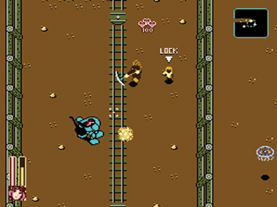
|
［レーダー］
画面右上にレーダーが表示されます。
黄色の点が敵の位置を表しており、
青い破線が射程距離（画面内）を表しています。
［ HP / FUEL ゲージ］
画面左下の、赤色のゲージが HP 、
黄色のゲージが FUEL を表しています。
残り少なくなると点滅します。
FUEL が 0 になると、FUEL の代わりに
HP が減るようになります。
［ LOCK ］
ロックオンしている敵の頭上に表示されます。
スタートボタンを押すとロックオン対象が変わります。
|
設定
|
|
方向キーで選択し、Ａで決定、
Ｂで設定画面を終了します。
セレクトボタンでアイテム画面へ移動します。
［マップ］
画面左上にダンジョン名、フロア数、マップ
が表示されます。
人（エレナ）のアイコンが現在位置、
青色のアイコンが前のフロアへ戻る位置、
黄色のアイコンが次のフロアへ進む位置
を表しています。
マップは、オートマッピングで、
行ったことのある場所が表示されます。
［ステータス］
画面右側に、現在の HP、FUEL、
攻撃力、防御力、討伐数、プレイ時間
が表示されます。
［せってい］
画面下側で各種設定を変更できます。
- コントロール：自機の操作方法を変更します。
- ロックオン：オートにすると、スタートボタンを
押さなくても、画面内に入った敵を自動的に
ロックオンするようになります。
- みえるきょり：ロングにすると、自機が
画面の中心から少し下がった位置になり
遠くまで見えるようになります。
- かいふく：オートにすると、HP や FUEL が
残り少なくなった際に自動的にアイテムを使用
して回復します。
|
アイテム
|
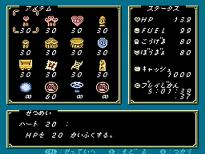
|
方向キーでアイテムを選択し、Ａボタンで使用します。
Ａボタン押しっぱなしで連続使用できます。
Ｂボタンでアイテム画面を終了します。
セレクトボタンで設定画面へ移動します。
［アイテム］
所持しているアイテムとその個数です。
最下段４つのアイテムは選択してＡボタンを押すことで
使用の ON / OFF を切り替えます。
［ステータス］
画面右側に、現在の HP、FUEL、
攻撃力、防御力、キャッシュ、プレイ時間
が表示されます。
［せつめい］
選択しているアイテムの説明が表示されます。
|
パスワード
|
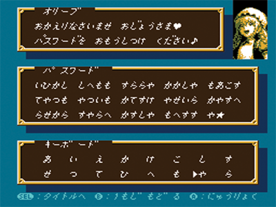
ホテルで取ったパスワード
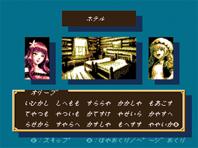
|
方向キーで文字を選択し、Ａボタンで文字を入力します。
Ｂボタンで１文字戻ります。
スタートボタンで１文字進みます。
セレクトボタンでタイトル画面へ移動します。
方向キー、Ａボタン、スタートボタンのいずれも
押しっぱなしで連続入力できます。
60 文字入力した時点でパスワードが正しければ
パスワードを取った時点からゲームが再開します。
パスワードはゲーム中、ホテルで取れます。
パスワードが間違っている場合は、
画面右上のキャラ（オリーブ）が泣くので、
パスワードを確認し、修正してください。
|